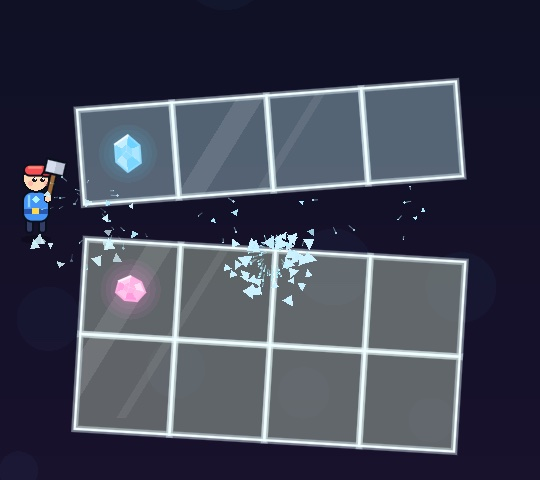

Головоломка для iPhone
Shiverglass
По одному кристалу в уламку.
Обирай точку удару, стеж за тріщинами й розколюй скло так, щоб у кожному уламку залишився один кристал.
Як грати
Як грати
80 головоломок у восьми розділах.
Як розколюється скло
Подивись, як на першому рівні удар розділяє два кристали, а на одному з наступних тріщина проходить через пару порталів.
Відкрити відео гри
Обери точку удару
Знайди лінію, якою можна розділити кристали.


Розколи скло
Стеж за тріщиною й залиш по одному кристалу в кожному уламку.

Спрямуй тріщину через портал
У наступних розділах з’являться портали та інші способи змінювати шлях тріщини.